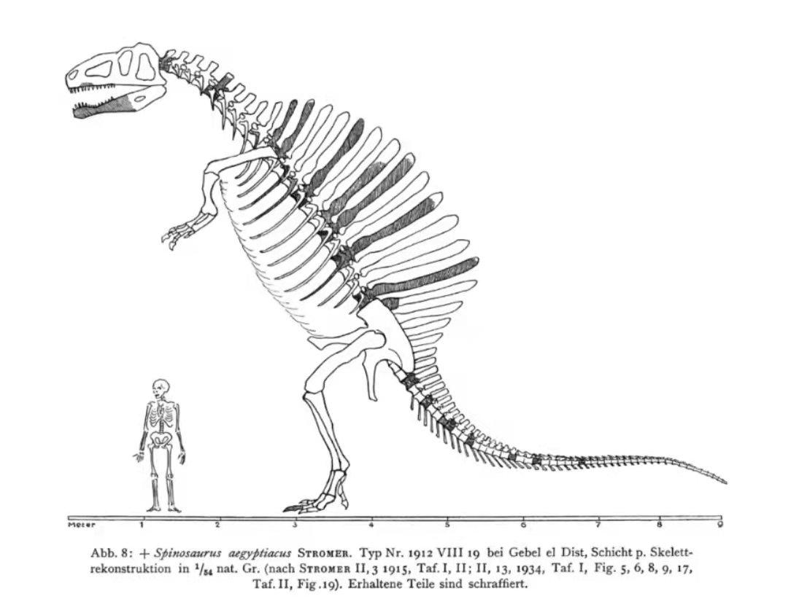
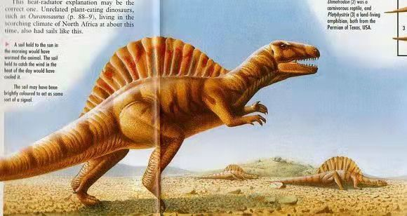
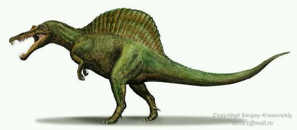
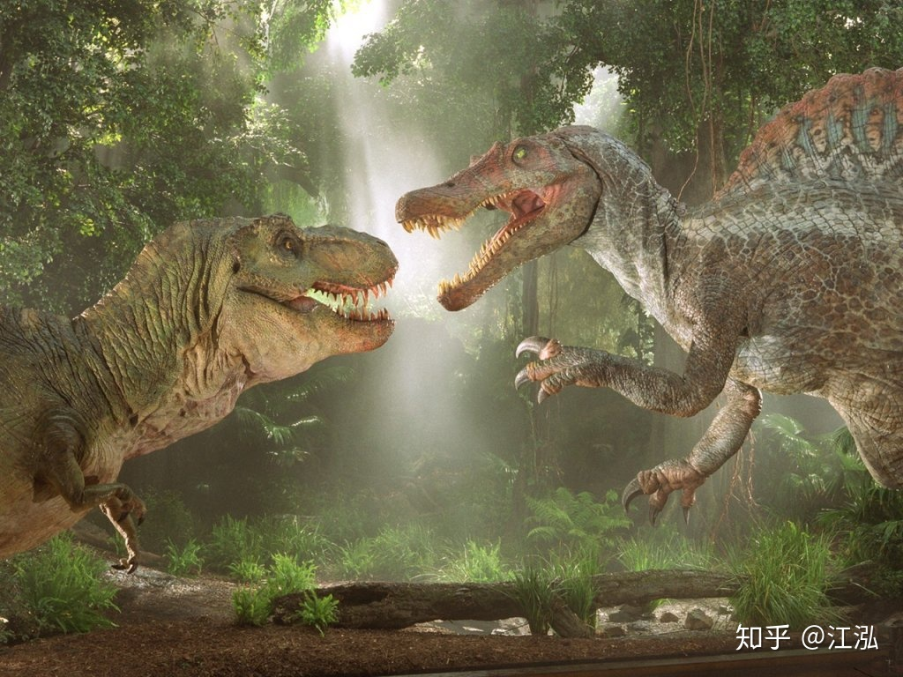
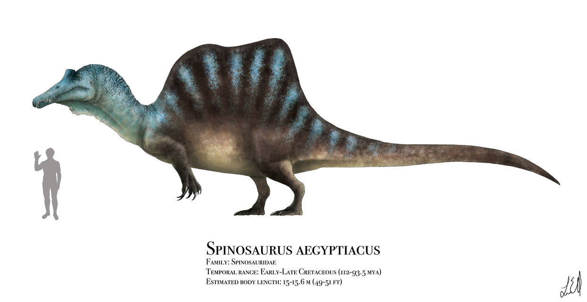
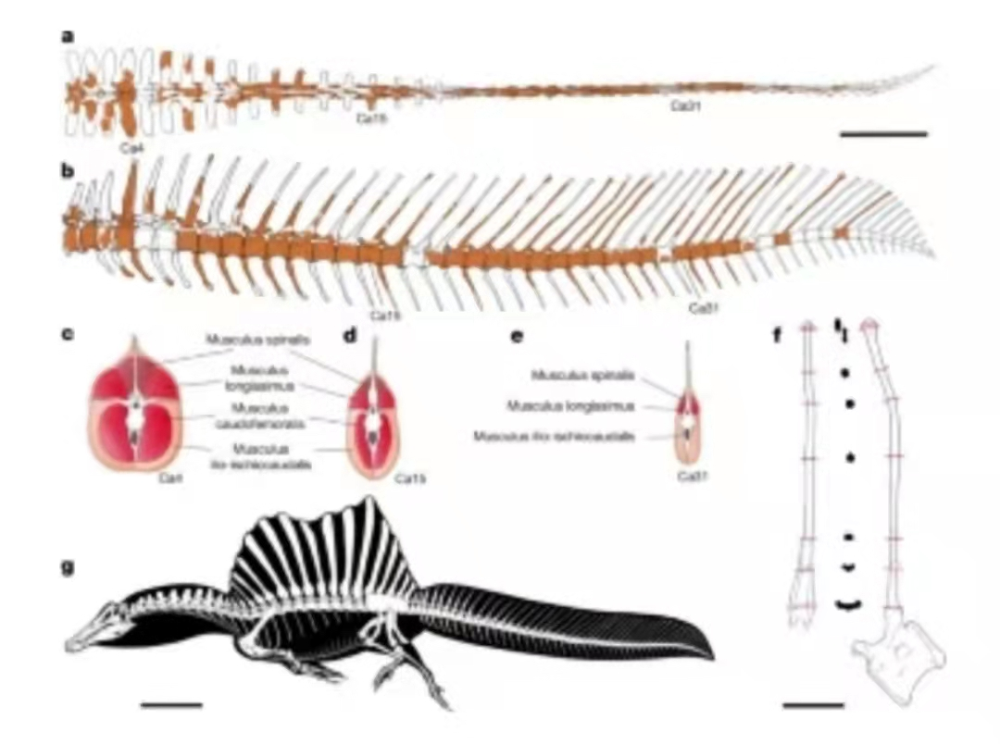
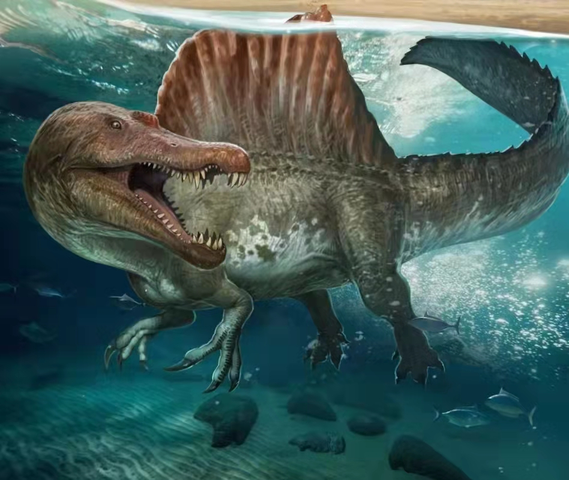

这是大家印象中棘龙的形象， 也就是《侏罗纪公园3》中登场的形象。
第一代：这是刚发现棘龙时古生物学家给它的复原， 还是尾巴拖在地上的站姿， 当时因为头骨化石不完整， 当时的古生物学家还没有意识到棘龙有一个长长的头， 就给它安了一个普通的肉食恐龙头骨。
 第二代：古生物学家把它复原成了一种凶猛的食肉恐龙， 并认为棘龙以其它恐龙为食。
这就是棘龙在《侏罗纪公园3》中登场的画面
第三代：随着发现了更多的化石证据， 古生物学家认为棘龙是以鱼类为食的。
第四代：随着更完整的尾部化石被发现， 越来越觉得上一代复原有点头重脚轻。 2020年， 古生物学家发现棘龙应该是长这一条很宽的尾巴， 很像鱼尾巴， 能帮助棘龙游泳。
这是棘龙的生态复原图。